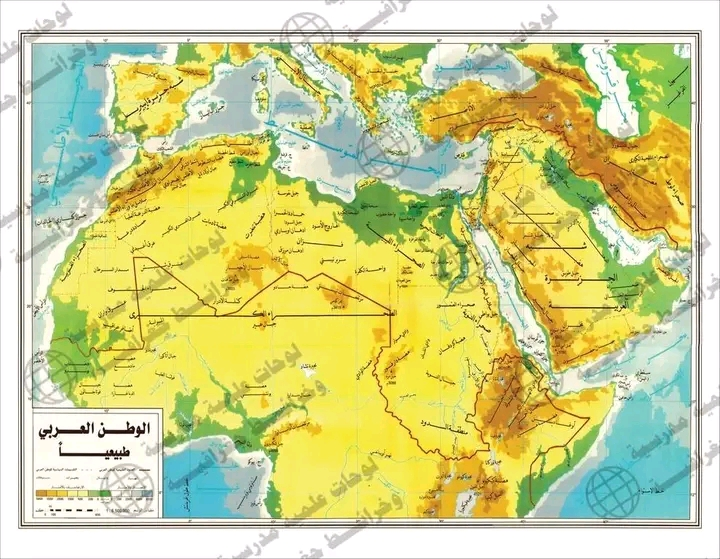
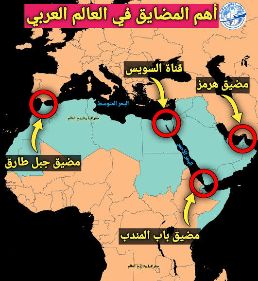
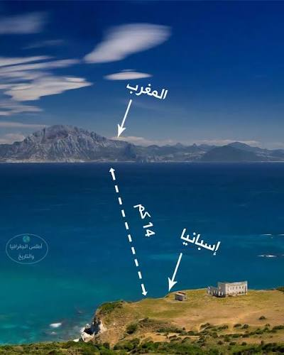
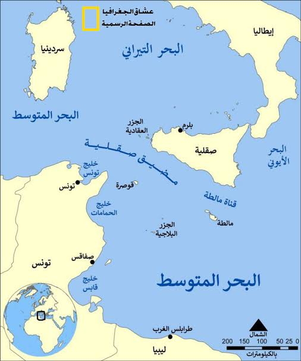
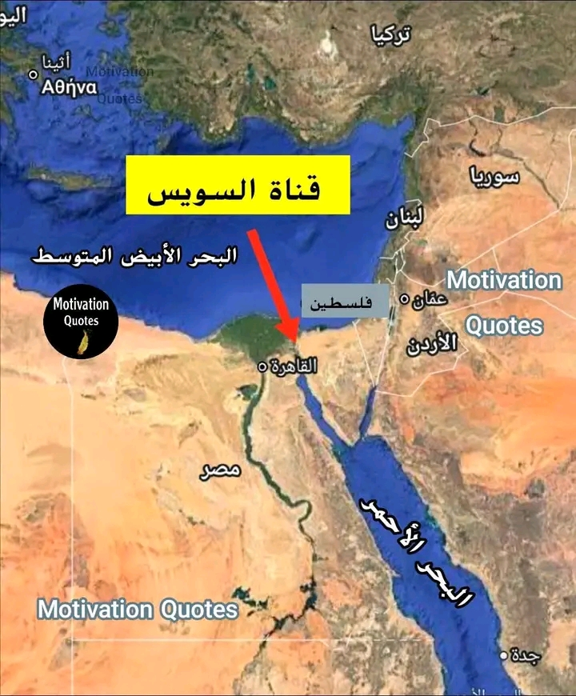
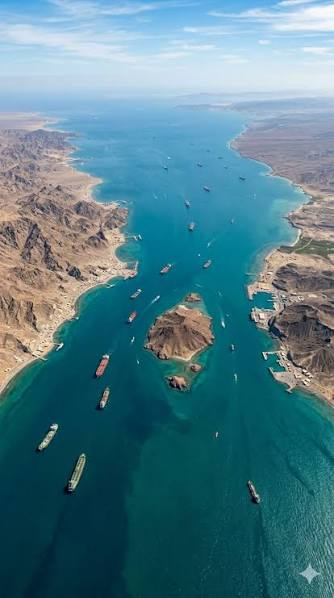
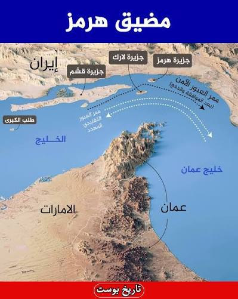

مزايا الموقع الجغرافي للعالم العربي
مقدمة
يشتمل العالم العربي (أو الوطن العربي) على كل الأقطار والمناطق التي تنتمي إلى العالم العربي وتضمّ سكّانًا عربًا وتعتمد العربية ضمن لغاتها الرسمية. ويقع العالم العربي في قلب العالم، ويمتدّ على مساحة تقارب 14 مليون كلم²، ويضمّ أزيد من 400 مليون نسمة موزّعين على 22 دولة عربية. ويُعدّ العالم العربي غنيًا بموارده الطبيعية والبشرية، مما جعله محطّ أطماع القوى الاستعمارية قديمًا وحديثًا.
ما هي مزايا الموقع الجغرافي للعالم العربي؟
I امتداد السواحل ودورها في انفتاح العالم العربي على الخارج
1. امتداد السواحل العربية
تمتد سواحل العالم العربي على طول 24,318 كلم (أي 6.83% من طول سواحل العالم) وتتوزع بين المحيط الأطلسي والبحر الأبيض المتوسط والبحر الأحمر والمحيط الهندي والخليج العربي/الفارسي.
وتتنوّع هذه السواحل بين واجهة أطلسية في الغرب، وواجهة متوسّطية في الشمال، وواجهة على البحر الأحمر وخليج عدن، وواجهة على المحيط الهندي وبحر العرب، وواجهة خليجية على الخليج العربي/الفارسي، ممّا جعل العالم العربي يتّصل بثلاث قارات (آسيا وإفريقيا وأوروبا) وبمحيطين (المحيط الأطلسي والمحيط الهندي).
2. دور السواحل في انفتاح العالم العربي على الخارج
ساهمت السواحل في انفتاح العالم العربي منذ القدم، انفتاحًا تجاريًا وبشريًا وثقافيًا على القارات الثلاث (آسيا وإفريقيا وأوروبا). وترتّب عن هذا الانفتاح نشأة موانئ ومدن ساحليّة أضحت مراكز استقطاب سكّاني واقتصادي، على عكس المناطق الدّاخلية السّاسعة التي لم تُحط بنفس درجة النموّ الاقتصادي. وينفتح العالم العربي على مختلف البحار والمحيطات عبر مضائق بحرية وممرات مائية أهمّها قناة السويس.
ومن أبرز هذه الموانئ والمدن الساحليّة: طنجة، الدار البيضاء، الجزائر، تونس، طرابلس، الإسكندرية، بيروت، اللاذقية، جدّة، عدن، مسقط، دبي، الكويت، والبصرة، وقد أضحت مراكز استقطاب سكّاني واقتصادي وثقافي.
وينفتح العالم العربي على مختلف البحار والمحيطات عبر مضائق بحرية وممرات مائية حيوية أهمّها قناة السويس ومضيق جبل طارق ومضيق باب المندب ومضيق هرمز، ممّا جعل سواحله مجالًا للتلاقي والتجارة بين القارات الثلاث.
II موقع جغرافي ذو أهمية استراتيجية كبرى
1. موقع يُشرف على ممرات بحرية حيوية للملاحة الدولية
أ. مضيق جبل طارق (Détroit de Gibraltar)
نقطة عبور رئيسية للمواصلات البحرية، وهو الممر الوحيد بين المحيط الأطلسي والبحر الأبيض المتوسط. وقد ازدادت أهميته الاستراتيجية بعد افتتاح قناة السويس سنة 1869، حيث تعبره سنويًا أكثر من 82 ألف سفينة (بمعدل 224 سفينة يوميًا). وتمثل ناقلات النفط ثلث حركة العبور التجاري.
ب. مضيق صقلية (Détroit de Sicile)
ويُعرف أيضًا بمضيق الوطن القبلي أو مضيق قليبية. ويبلغ أدنى عرض له 145 كلم بين كاب فيتو (في مستوى مزارا دال فانو بصقلية) والوطن القبلي (في مستوى الهوّارية). ولا يزيد عمقه على 316 م. وتتخلّله جزيرة بنتالريا الإيطالية بموجب اتفاقية ترسيم الحدود التونسية – الإيطالية المبرمة.
ج. مضيق باب المندب (Détroit Bab El Mandeb)
يصل البحر الأحمر بخليج عدن والمحيط الهندي، ويُعدّ ممرًا استراتيجيًا هامًا للتجارة العالمية، حيث تعبره نسبة كبيرة من التجارة الدولية.
د. مضيق هرمز (Détroit de Hormuz)
يصل الخليج العربي بخليج عمان والمحيط الهندي، ويُعتبر من أهم الممرات المائية في العالم، حيث يعبره حوالي 20% من النفط العالمي.
هـ. قناة السويس
تُعدّ من أهم الممرات المائية في العالم، وتربط بين البحر الأبيض المتوسط والبحر الأحمر، مما يسهّل حركة التجارة بين أوروبا وآسيا.
2. موقع يُحظى بأهمية استراتيجية كبرى
يكتسي العالم العربي أهمية استراتيجية كبرى بفضل موقعه الجغرافي المتميز، حيث يتحكم في أهم الممرات المائية العالمية، مما يمنحه دورًا محوريًا في التجارة الدولية.
أ. التحكّم في أهمّ الممرات المائية العالمية
يتحكّم العالم العربي في خمسة ممرات مائية ذات أهمية عالمية: قناة السويس، ومضيق جبل طارق، ومضيق صقلية، ومضيق باب المندب، ومضيق هرمز. وهي شرايين حيوية تربط بين المحيط الأطلسي والبحر الأبيض المتوسط والبحر الأحمر والمحيط الهندي والخليج العربي، فلا تكاد تجارة دولية تمرّ من الشرق إلى الغرب أو من الشمال إلى الجنوب دون أن تعبر أحد هذه الممرات.
ب. أهمية طاقية واقتصادية عالمية
يكتسي الموقع العربي أهمية اقتصادية كبرى لكونه يتحكّم في طرق نقل الطاقة والتجارة: فحوالي 20% من النفط العالمي يعبر مضيق هرمز، وثلث حركة العبور بمضيق جبل طارق تتكوّن من ناقلات النفط، في حين تختصر قناة السويس مسافة الملاحة بين أوروبا وآسيا اختصارًا كبيرًا وتُدرّ عائدات ضخمة. ويضمّ العالم العربي أهمّ حقول النفط والغاز في العالم، ممّا يجعله منطقة استراتيجية بالغة الحساسية في الاقتصاد العالمي.
ج. أهمية جيوسياسية وعسكرية
منح الموقع الاستراتيجي العالم العربي ثقلاً جيوسياسيًا كبيرًا في العلاقات الدولية، إذ يُشرف على نقاط عبور لا بديل لها، ويجعل من المنطقة مجال تنافس بين القوى الكبرى. وقد ظهر ذلك جليًّا في الأطماع الاستعمارية القديمة والحديثة، وفي انتشار القواعد العسكرية الأجنبية، وفي الحروب والنزاعات التي شهدتها المنطقة على مرّ التاريخ، باعتبار الموقع الجغرافي أحد أهمّ مقوّمات القوة.
أرقام مفتاحية:
- 24,318 كلم: طول سواحل العالم العربي، أي 6.83% من سواحل العالم.
- 82 ألف سفينة: تعبر مضيق جبل طارق سنويًا بمعدل 224 سفينة يوميًا.
- 20%: نسبة النفط العالمي الذي يعبر مضيق هرمز.
- 1869: سنة افتتاح قناة السويس التي زادت من أهمية مضيق جبل طارق.
- 22 دولة عربية و14 مليون كلم²: مساحة العالم العربي وعدد دوله.
خاتمة
يتمتع العالم العربي بموقع جغرافي متميز يمنحه أهمية استراتيجية كبرى، إذ يمتد على مساحة شاسعة تنفتح على مختلف البحار والمحيطات عبر مضايق وممرات مائية حيوية للملاحة الدولية، مما جعله محطّ أطماع القوى الاستعمارية قديمًا وحديثًا.
📖 تعريفات
🌍 دول ومناطق
- العالم العربي: مجموعة الأقطار والمناطق التي تضمّ سكّانًا عربًا وتعتمد العربية ضمن لغاتها الرسمية. يمتدّ على مساحة تقارب 14 مليون كلم²، ويضمّ أزيد من 400 مليون نسمة موزّعين على 22 دولة عربية، ويقع في قلب العالم.
- مضيق جبل طارق: الممر الوحيد بين المحيط الأطلسي والبحر الأبيض المتوسط، ونقطة عبور رئيسية للمواصلات البحرية. ازدادت أهميته الاستراتيجية بعد افتتاح قناة السويس سنة 1869، حيث تعبره سنويًا أكثر من 82 ألف سفينة (بمعدل 224 سفينة يوميًا)، وتمثل ناقلات النفط ثلث حركة العبور التجاري.
- مضيق صقلية: يُعرف أيضًا بمضيق الوطن القبلي أو مضيق قليبية. يبلغ أدنى عرض له 145 كلم بين كاب فيتو (في مستوى مزارا دال فانو بصقلية) والوطن القبلي (في مستوى الهوّارية)، ولا يزيد عمقه على 316 م، وتتخلّله جزيرة بنتالريا الإيطالية بموجب اتفاقية ترسيم الحدود التونسية – الإيطالية.
- مضيق باب المندب: يصل البحر الأحمر بخليج عدن والمحيط الهندي، ويُعدّ ممرًا استراتيجيًا هامًا للتجارة العالمية، حيث تعبره نسبة كبيرة من التجارة الدولية.
- مضيق هرمز: يصل الخليج العربي بخليج عمان والمحيط الهندي، ويُعتبر من أهم الممرات المائية في العالم، حيث يعبره حوالي 20% من النفط العالمي.
- قناة السويس: من أهم الممرات المائية في العالم، تربط بين البحر الأبيض المتوسط والبحر الأحمر، وتسهّل حركة التجارة بين أوروبا وآسيا. افتُتحت سنة 1869.
- المحيط الأطلسي: أحد المحيطات التي تنفتح عليها سواحل العالم العربي.
- البحر الأبيض المتوسط: أحد البحار التي تنفتح عليها سواحل العالم العربي.
- البحر الأحمر: أحد البحار التي تنفتح عليها سواحل العالم العربي، ويتصل بالمحيط الهندي عبر مضيق باب المندب.
- المحيط الهندي: أحد المحيطات التي تنفتح عليها سواحل العالم العربي.
- الخليج العربي/الفارسي: أحد الخلجان التي تنفتح عليها سواحل العالم العربي، ويتصل بخليج عمان والمحيط الهندي عبر مضيق هرمز.
📅 سنوات وفترات
- 1869: افتتاح قناة السويس، وهو الحدث الذي زاد من الأهمية الاستراتيجية لمضيق جبل طارق.
📌 أخرى
- المضيق البحري: ممر مائي ضيّق يصل بين بحرين أو محيطين، ويكتسي أهمية استراتيجية كبرى في الملاحة الدولية والتجارة العالمية.
- الممر المائي: مجرى مائي طبيعي أو اصطناعي تسلكه السفن للانتقال من بحر إلى آخر، مثل قناة السويس.
🗺️ خرائط ومعطيات مصورة






